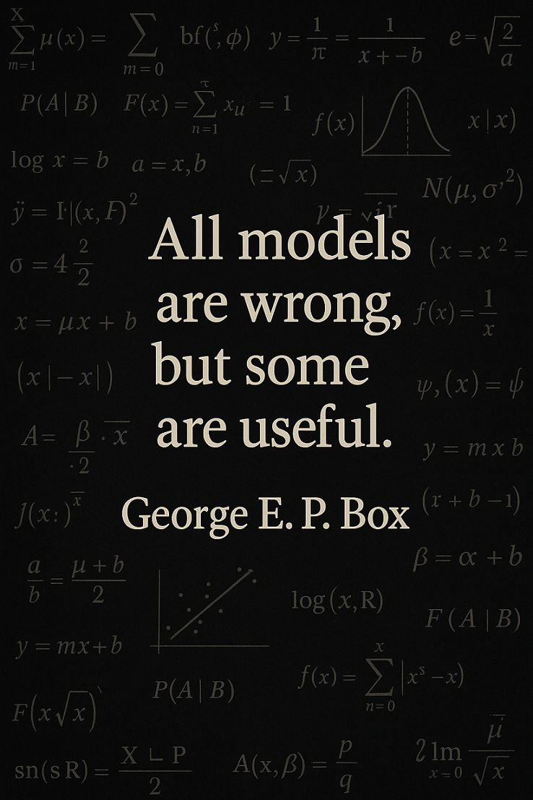

Explained vs. Predictive Power: R², Adjusted R², and Beyond
R
Statistics
Machine Learning
r-squared
adjusted-r-squared
predictive-modeling
tidymodels
model-evaluation
Author
M. Fatih Tüzen
Published
April 30, 2025

1 Introduction
You trust R². Should you?
You proudly present a model with R² = 0.95. Everyone applauds.
But what if your model fails miserably on the next new data?
When building a statistical model, one of the first numbers analysts and data scientists often cite is the R², or coefficient of determination. It’s widely reported in research, academic theses, and industry reports — and yet, frequently misunderstood or misused.
Does a high R² mean your model is good? Is it enough to evaluate model performance? What about its adjusted or predictive counterparts?
This article will explore in depth: - What R², Adjusted R², and Predicted R² actually mean - Why relying solely on R² can mislead you - How to evaluate models using both explanatory and predictive power - Real-life implementation using the {tidymodels} framework in R
We’ll also discuss best practices and common pitfalls, and equip you with a mindset to look beyond surface-level model summaries.
2 Theoretical Background
2.1 What is R²?
The coefficient of determination, R², is defined as:
\(\text{SS}_{\text{res}}\) = Sum of squares of residuals = \(\sum (y_i - \hat{y}_i)^2\)
\(\text{SS}_{\text{tot}}\) = Total sum of squares = \(\sum (y_i - \bar{y})^2\)
It tells us the proportion of variance explained by the model. An R² of 0.80 implies that 80% of the variability in the dependent variable is explained by the model.
But beware — it only measures fit to training data, not the model’s ability to generalize.
2.2 Adjusted R²
When we add predictors to a regression model, R² will never decrease — even if the added variables are irrelevant.
Adjusted R² corrects this by penalizing the number of predictors: \[R^2_{\text{adj}} = 1 - \left(1 - R^2\right) \cdot \left(\frac{n - 1}{n - p - 1}\right)\]
Where:
n : number of observations
p : number of predictors
Thus, Adjusted R² will only increase if the new predictor improves the model more than expected by chance.
2.3 Predicted R²
Predicted R² (or cross-validated R²) is the most honest estimate of model utility. It answers the question:
How well will this model predict new, unseen data?
This is typically calculated using cross-validation, and unlike regular R², it reflects out-of-sample performance.
Variables like crim, tax, and lstat exhibit high variability and potential skewness.
chas is binary and acts like a categorical indicator.
The target variable medv ranges from $5,000 to $50,000 (capped).
rm (average number of rooms) and lstat (lower status population) show notable spread and will likely play strong roles in the model.
Next, we examine correlations with medv:
boston %>%correlate() %>% corrr::focus(medv) %>%arrange(desc(medv))
# A tibble: 13 × 2
term medv
<chr> <dbl>
1 rm 0.695
2 zn 0.360
3 black 0.333
4 dis 0.250
5 chas 0.175
6 age -0.377
7 rad -0.382
8 crim -0.388
9 nox -0.427
10 tax -0.469
11 indus -0.484
12 ptratio -0.508
13 lstat -0.738
Interpretation of Correlations:
rm shows a strong positive correlation with medv — more rooms generally imply higher value.
lstat and crim have strong negative correlations — as lower status or crime increases, housing values drop.
nox, age, and ptratio also show negative correlations with price, hinting at socio-environmental effects.
These insights will guide us in building and evaluating our model.
4 Exploratory Data Analysis
Let’s visualize some of the most influential variables in relation to medv, our target variable. These exploratory graphs help reveal potential linear or nonlinear relationships, outliers, or the need for transformation.
# Define individual plots with improved formatting for Quarto renderingp1 <-ggplot(boston, aes(rm, medv)) +geom_point(alpha =0.5, color ="#2c7fb8") +geom_smooth(method ="lm", se =FALSE, color ="black") +labs(title ="Rooms\nvs. Median Value",x ="Average Number of Rooms (rm)",y ="Median Value of Homes ($1000s)" ) +theme_minimal() +theme(plot.title =element_text(size =11, lineheight =1.1))p2 <-ggplot(boston, aes(lstat, medv)) +geom_point(alpha =0.5, color ="#de2d26") +geom_smooth(method ="loess", se =FALSE, color ="black") +labs(title ="Lower Status %\nvs. Median Value",x ="% Lower Status Population (lstat)",y ="Median Value of Homes ($1000s)" ) +theme_minimal() +theme(plot.title =element_text(size =11, lineheight =1.1))p3 <-ggplot(boston, aes(nox, medv)) +geom_point(alpha =0.5, color ="#31a354") +geom_smooth(method ="loess", se =FALSE, color ="black") +labs(title ="NOx Concentration\nvs. Median Value",x ="NOx concentration (ppm)",y ="Median Value of Homes ($1000s)" ) +theme_minimal() +theme(plot.title =element_text(size =11, lineheight =1.1))p4 <-ggplot(boston, aes(age, medv)) +geom_point(alpha =0.5, color ="#ff7f00") +geom_smooth(method ="loess", se =FALSE, color ="black") +labs(title ="Old Homes %\nvs. Median Value",x ="% Homes Built Before 1940 (age)",y ="Median Value of Homes ($1000s)" ) +theme_minimal() +theme(plot.title =element_text(size =11, lineheight =1.1))p5 <-ggplot(boston, aes(tax, medv)) +geom_point(alpha =0.5, color ="#6a3d9a") +geom_smooth(method ="loess", se =FALSE, color ="black") +labs(title ="Tax Rate\nvs. Median Value",x ="Tax Rate (per $10,000)",y ="Median Value of Homes ($1000s)" ) +theme_minimal() +theme(plot.title =element_text(size =11, lineheight =1.1))p6 <-ggplot(boston, aes(dis, medv)) +geom_point(alpha =0.5, color ="#1f78b4") +geom_smooth(method ="loess", se =FALSE, color ="black") +labs(title ="Distance to Jobs\nvs. Median Value",x ="Weighted Distance to Employment Centers (dis)",y ="Median Value of Homes ($1000s)" ) +theme_minimal() +theme(plot.title =element_text(size =11, lineheight =1.1))
(p1 | p2) +plot_layout(guides ='collect')
Rooms (rm): Strong positive linear relationship with medv. More rooms correlate with higher home values.
Lower Status Population (lstat): Strong nonlinear inverse relation. Poorer areas tend to have significantly lower housing values.
Old Homes (age): Slight negative trend — older areas may have reduced appeal or value.
(p5 | p6) +plot_layout(guides ='collect')
Tax Rate (tax): Higher taxes often relate to lower housing value, possibly due to location or socio-economic constraints.
Distance to Employment Centers (dis): Weak to moderate positive correlation. Suburban or well-connected areas might command higher value.
These six plots combine both socioeconomic and environmental dimensions of housing value — providing both intuition and modeling direction.
5 Modeling with Tidymodels
Now that we’ve explored the data, it’s time to fit a model using the tidymodels framework. We’ll use a simple linear regression to predict medv, the median home value.
5.1 Data Splitting and Preprocessing
We begin by splitting the dataset into training and testing sets. The training set will be used to fit the model, and the test set will evaluate its generalization performance.
R² measures the proportion of variance in medv explained by the predictors in the training set.
Adjusted R² adjusts this value by penalizing for the number of predictors, making it more reliable in multi-variable contexts.
If R² and Adjusted R² differ significantly, it indicates that some predictors may not be contributing meaningfully to the model.
Example: A model with 12 predictors might show R² = 0.76, but Adjusted R² = 0.72 — suggesting some predictors are adding complexity without real explanatory power.
5.4 Test Set Performance
Now we assess the model on the unseen test data:
preds <-predict(fit, test) %>%bind_cols(test)metrics(preds, truth = medv, estimate = .pred)
# A tibble: 3 × 3
.metric .estimator .estimate
<chr> <chr> <dbl>
1 rmse standard 4.79
2 rsq standard 0.784
3 mae standard 3.32
üìâ Interpretation:
If test R² is much lower than training R², overfitting may be present.
If test RMSE is high, the model’s absolute prediction error is large — another sign of poor generalization.
5.5 Cross-Validation for Predicted R²
To get a more robust performance estimate, we use 10-fold cross-validation:
# A tibble: 2 × 6
.metric .estimator mean n std_err .config
<chr> <chr> <dbl> <int> <dbl> <chr>
1 rmse standard 4.79 10 0.384 Preprocessor1_Model1
2 rsq standard 0.712 10 0.0341 Preprocessor1_Model1
✅ Interpretation:
Predicted R² (via CV) tells us how well the model would perform on unseen data across multiple resamples.
It typically lies between training R² and test R².
Consistency between cross-validated and test R² implies a stable model.
Tip
Use cross-validation as a standard evaluation tool, especially when data is limited.
üí¨ Summary of Findings:
Our linear model explains a good portion of the variance, but some predictors might be irrelevant or redundant.
Cross-validation confirms the model is relatively stable but leaves room for refinement — possibly through feature selection or nonlinear modeling.
In the next step, we can analyze residuals or explore model improvements such as polynomial terms or regularization.
5.6 Residual Diagnostics
Let’s now check if our linear model satisfies basic regression assumptions. We’ll plot residuals and assess patterns, non-linearity, and potential heteroskedasticity.
We want residuals to be randomly scattered around zero.
If there’s a pattern or funnel shape, that may indicate non-linearity or heteroskedasticity.
5.7 Improving the Model: Transforming lstat
From our earlier EDA, we saw a strong nonlinear relationship between lstat (lower status %) and medv. Let’s try log-transforminglstat to capture that curvature.
5.7.1 Updated Recipe with Transformation
rec_log <-recipe(medv ~ ., data = train) %>%step_log(lstat)workflow_log <-workflow() %>%add_model(model) %>%add_recipe(rec_log)fit_log <-fit(workflow_log, data = train)
5.7.2 Evaluation of Transformed Model
preds_log <-predict(fit_log, test) %>%bind_cols(test)metrics(preds_log, truth = medv, estimate = .pred)
# A tibble: 3 × 3
.metric .estimator .estimate
<chr> <chr> <dbl>
1 rmse standard 4.43
2 rsq standard 0.815
3 mae standard 3.16
Compare RMSE and R² from the transformed model to the original.
If we see improvement, the transformation helped capture underlying nonlinearity.
Adjusted R² is especially helpful here to assess whether the transformation truly improved fit — not just overfit.
Tip
Transformations, polynomial terms, and splines are all valid strategies to improve linear models without abandoning interpretability.
With residuals checked and a transformation tested, our next step could be to explore regularized models like ridge or lasso regression, or even move beyond linearity with tree-based models.
6 Common Pitfalls and Misconceptions
Even though R² is widely reported and intuitively appealing, its interpretation is often flawed — even by experienced analysts. Here, we’ll go beyond textbook definitions and highlight real-world traps and misunderstandings related to R² and its variants.
üö´ Misconception 1: High R¬≤ means the model is good
A model with R² = 0.95 may look impressive, but that doesn’t guarantee predictive power.
High R² can result from overfitting, especially when the model is complex or contains many predictors.
Adjusted R² and Predicted R² must be considered to evaluate true usefulness.
⚠️ Misconception 2: Adding predictors always improves the model
While R² never decreases with more variables, Adjusted R² can — and should — if the new variable doesn’t add real value.
Including irrelevant predictors increases complexity without improving explanatory power.
This is a form of dimensional overfitting.
❌ Misconception 3: R² indicates causality
R² quantifies correlation, not causation.
A high R² can arise from spurious relationships or confounding variables.
Always supplement with domain knowledge and causal reasoning.
üìâ Misconception 4: R¬≤ is a universal performance metric
R² only applies to regression tasks. Using it for classification models is inappropriate and meaningless.
For binary classification, use metrics like AUC, accuracy, precision, and recall.
üîç Misconception 5: Residual plots don‚Äôt matter if R¬≤ is high
A good R² doesn’t guarantee that model assumptions are met.
Residual patterns may still reveal non-linearity, heteroskedasticity, or influential outliers.
Many practitioners report R² and Adjusted R², but omit cross-validation entirely.
Predicted R² (e.g., via 10-fold CV) is the most honest measure of model generalizability.
üî¨ Misconception 7: R¬≤ has a fixed interpretation
R² values depend on the context. In social sciences, an R² of 0.3 can be meaningful, while in physics we expect 0.99+.
A “low” R² doesn’t mean the model is useless — it may reflect inherent variability in human behavior or macroeconomic data.
Insight: Always use R² in context — alongside other metrics, validation strategies, and graphical checks.
For a deeper dive into R² misconceptions and proper regression diagnostics, see:
Harrell, F. (2015). Regression Modeling Strategies. Springer.
Gelman & Hill (2006). Data Analysis Using Regression and Multilevel/Hierarchical Models.
Burnham & Anderson (2002). Model Selection and Multimodel Inference.
Kutner et al. (2004). Applied Linear Regression Models.
Together, these references build the foundation for responsible model interpretation.
7 Conclusion & Recommendations
7.1 üìå Summary
In this post, we explored R², Adjusted R², and Predicted R² in depth — not just as mathematical constructs, but as tools for critical thinking in modeling. We walked through theory, practical application in R with tidymodels, residual diagnostics, and even model improvement through transformation.
Let’s recap: - R² tells us how well our model fits the training data, but can be misleading on its own. - Adjusted R² improves upon R² by accounting for model complexity. - Predicted R², evaluated via cross-validation, provides the most trustworthy estimate of real-world performance.
High R² values can be seductive. But as we saw, they don’t guarantee causality, generalizability, or correctness. Only by combining R² with residual diagnostics, domain knowledge, and out-of-sample validation can we judge a model responsibly.
7.2 üí° Recommendations for Practitioners
Always accompany R² with Adjusted and Predicted R² — never rely on one metric alone.
Perform residual diagnostics to check linearity, variance assumptions, and outlier influence.
Use cross-validation (e.g., 10-fold) as a default evaluation strategy, especially when the dataset is not large.
Transform nonlinear predictors (as we did with lstat) or use flexible models (e.g., splines, GAMs) when needed.
Avoid including irrelevant predictors — they inflate R² without improving generalization.
Contextualize your R² — in some fields, a lower R² is still useful; in others, it may signal inadequacy.
Complement numerical metrics with visual tools — scatterplots, predicted vs. actual plots, and residuals reveal insights numbers alone may miss.
7.3 üöÄ Looking Ahead
If you want to take your modeling further: - Try ridge or lasso regression to handle multicollinearity. - Explore tree-based models (e.g., random forests) when relationships are complex and nonlinear. - Use tools like yardstick and modeltime to automate robust validation and reporting.
In the end, modeling isn’t just about maximizing R² — it’s about understanding your data, validating your decisions, and making informed predictions.
Thanks for reading!
Feel free to share, fork, or reuse this analysis. Questions and comments are welcome.
Source Code
---title: "Explained vs. Predictive Power: R¬≤, Adjusted R¬≤, and Beyond"author: "M. Fatih T√ºzen"date: "2025-04-30"categories: [R, Statistics, Machine Learning, r-squared, adjusted-r-squared, predictive-modeling, tidymodels, model-evaluation]image: quote_box.pngexecute: warning: false message: falseformat: html: toc: true toc-depth: 3 number-sections: true code-fold: false code-tools: true code-overflow: scroll code-block-background: true---{fig-align="center" width="8cm"}# Introduction> **You trust R¬≤. Should you?**\> You proudly present a model with R¬≤ = 0.95. Everyone applauds.\> But what if your model fails miserably on the next new data?When building a statistical model, one of the first numbers analysts and data scientists often cite is the **R¬≤**, or coefficient of determination. It's widely reported in research, academic theses, and industry reports ‚Äî and yet, frequently misunderstood or misused.Does a high R¬≤ mean your model is good? Is it enough to evaluate model performance? What about its adjusted or predictive counterparts?This article will explore in depth: - What R¬≤, Adjusted R¬≤, and Predicted R¬≤ actually mean - Why relying solely on R¬≤ can mislead you - How to evaluate models using **both explanatory and predictive power** - Real-life implementation using the **{tidymodels}** framework in RWe‚Äôll also discuss best practices and common pitfalls, and equip you with a mindset to look beyond surface-level model summaries.# Theoretical Background## What is R¬≤?The **coefficient of determination**, R¬≤, is defined as:$$R^2 = 1 - \frac{\text{SS}_{\text{res}}}{\text{SS}_{\text{tot}}}$$Where:- $\text{SS}_{\text{res}}$ = Sum of squares of residuals = $\sum (y_i - \hat{y}_i)^2$- $\text{SS}_{\text{tot}}$ = Total sum of squares = $\sum (y_i - \bar{y})^2$It tells us the **proportion of variance explained by the model**. An R¬≤ of 0.80 implies that 80% of the variability in the dependent variable is explained by the model.But beware ‚Äî it only measures **fit to training data**, not the model's ability to **generalize**.## Adjusted R¬≤When we add predictors to a regression model, R¬≤ will never decrease ‚Äî even if the added variables are irrelevant.**Adjusted R¬≤** corrects this by penalizing the number of predictors: $$R^2_{\text{adj}} = 1 - \left(1 - R^2\right) \cdot \left(\frac{n - 1}{n - p - 1}\right)$$Where:- n : number of observations- p : number of predictorsThus, Adjusted R¬≤ will **only increase** if the new predictor improves the model more than expected by chance.## Predicted R¬≤**Predicted R¬≤** (or cross-validated R¬≤) is the most honest estimate of model utility. It answers the question:> *How well will this model predict new, unseen data?*This is typically calculated using cross-validation, and unlike regular R¬≤, it reflects **out-of-sample performance**.You can also view it as:$$R^2_{\text{pred}} = 1 - \frac{\text{PRESS}}{\text{SS}_{\text{tot}}}$$Where PRESS is the **Prediction Error Sum of Squares** based on cross-validation.# Dataset OverviewWe‚Äôll use the classic **Boston Housing Dataset** to demonstrate. It includes:- Socio-economic and housing variables for 506 Boston suburbs- Target: `medv` (median value of owner-occupied homes in \$1000s)Below are the key variables:- **crim**: per capita crime rate by town- **zn**: proportion of residential land zoned for large lots- **indus**: proportion of non-retail business acres- **chas**: Charles River dummy variable (1 = tract bounds river; 0 = otherwise)- **nox**: nitric oxides concentration (parts per 10 million)- **rm**: average number of rooms per dwelling- **age**: proportion of owner-occupied units built before 1940- **dis**: weighted distance to employment centers- **rad**: index of accessibility to radial highways- **tax**: property-tax rate per \$10,000- **ptratio**: pupil-teacher ratio by town- **black**: 1000(Bk - 0.63)\^2 where Bk is the proportion of Black residents- **lstat**: percentage of lower status of the population- **medv**: **target** ‚Äî median value of owner-occupied homes (in \$1000s)This regression problem mimics common real estate or socio-economic modeling use cases. Let‚Äôs first examine the dataset‚Äôs summary statistics.```{r}library(tidymodels)library(MASS)library(ggplot2)library(corrr)library(skimr)library(patchwork)boston <- MASS::Bostonskim(boston)```**Commentary:**- Variables like `crim`, `tax`, and `lstat` exhibit high variability and potential skewness.- `chas` is binary and acts like a categorical indicator.- The target variable `medv` ranges from \$5,000 to \$50,000 (capped).- `rm` (average number of rooms) and `lstat` (lower status population) show notable spread and will likely play strong roles in the model.Next, we examine correlations with `medv`:```{r}boston %>%correlate() %>% corrr::focus(medv) %>%arrange(desc(medv))```**Interpretation of Correlations:**- `rm` shows a **strong positive** correlation with `medv` ‚Äî more rooms generally imply higher value.- `lstat` and `crim` have **strong negative** correlations ‚Äî as lower status or crime increases, housing values drop.- `nox`, `age`, and `ptratio` also show negative correlations with price, hinting at socio-environmental effects.These insights will guide us in building and evaluating our model.# Exploratory Data AnalysisLet‚Äôs visualize some of the most influential variables in relation to `medv`, our target variable. These exploratory graphs help reveal potential linear or nonlinear relationships, outliers, or the need for transformation.```{r}# Define individual plots with improved formatting for Quarto renderingp1 <-ggplot(boston, aes(rm, medv)) +geom_point(alpha =0.5, color ="#2c7fb8") +geom_smooth(method ="lm", se =FALSE, color ="black") +labs(title ="Rooms\nvs. Median Value",x ="Average Number of Rooms (rm)",y ="Median Value of Homes ($1000s)" ) +theme_minimal() +theme(plot.title =element_text(size =11, lineheight =1.1))p2 <-ggplot(boston, aes(lstat, medv)) +geom_point(alpha =0.5, color ="#de2d26") +geom_smooth(method ="loess", se =FALSE, color ="black") +labs(title ="Lower Status %\nvs. Median Value",x ="% Lower Status Population (lstat)",y ="Median Value of Homes ($1000s)" ) +theme_minimal() +theme(plot.title =element_text(size =11, lineheight =1.1))p3 <-ggplot(boston, aes(nox, medv)) +geom_point(alpha =0.5, color ="#31a354") +geom_smooth(method ="loess", se =FALSE, color ="black") +labs(title ="NOx Concentration\nvs. Median Value",x ="NOx concentration (ppm)",y ="Median Value of Homes ($1000s)" ) +theme_minimal() +theme(plot.title =element_text(size =11, lineheight =1.1))p4 <-ggplot(boston, aes(age, medv)) +geom_point(alpha =0.5, color ="#ff7f00") +geom_smooth(method ="loess", se =FALSE, color ="black") +labs(title ="Old Homes %\nvs. Median Value",x ="% Homes Built Before 1940 (age)",y ="Median Value of Homes ($1000s)" ) +theme_minimal() +theme(plot.title =element_text(size =11, lineheight =1.1))p5 <-ggplot(boston, aes(tax, medv)) +geom_point(alpha =0.5, color ="#6a3d9a") +geom_smooth(method ="loess", se =FALSE, color ="black") +labs(title ="Tax Rate\nvs. Median Value",x ="Tax Rate (per $10,000)",y ="Median Value of Homes ($1000s)" ) +theme_minimal() +theme(plot.title =element_text(size =11, lineheight =1.1))p6 <-ggplot(boston, aes(dis, medv)) +geom_point(alpha =0.5, color ="#1f78b4") +geom_smooth(method ="loess", se =FALSE, color ="black") +labs(title ="Distance to Jobs\nvs. Median Value",x ="Weighted Distance to Employment Centers (dis)",y ="Median Value of Homes ($1000s)" ) +theme_minimal() +theme(plot.title =element_text(size =11, lineheight =1.1))``````{r, fig.width=12, fig.height=4}(p1 | p2) + plot_layout(guides = 'collect')```- **Rooms (`rm`)**: Strong positive linear relationship with `medv`. More rooms correlate with higher home values.- **Lower Status Population (`lstat`)**: Strong nonlinear inverse relation. Poorer areas tend to have significantly lower housing values.```{r, fig.width=12, fig.height=4}(p3 | p4) + plot_layout(guides = 'collect')```- **Nitric Oxide (`nox`)**: Moderate negative relationship ‚Äî environmental factors like pollution impact price.- **Old Homes (`age`)**: Slight negative trend ‚Äî older areas may have reduced appeal or value.```{r, fig.width=12, fig.height=4}(p5 | p6) + plot_layout(guides = 'collect')```- **Tax Rate (`tax`)**: Higher taxes often relate to lower housing value, possibly due to location or socio-economic constraints.- **Distance to Employment Centers (`dis`)**: Weak to moderate positive correlation. Suburban or well-connected areas might command higher value.These six plots combine both socioeconomic and environmental dimensions of housing value ‚Äî providing both intuition and modeling direction.# Modeling with TidymodelsNow that we‚Äôve explored the data, it's time to fit a model using the **tidymodels** framework. We'll use a simple linear regression to predict `medv`, the median home value.## Data Splitting and PreprocessingWe begin by splitting the dataset into training and testing sets. The training set will be used to fit the model, and the test set will evaluate its generalization performance.```{r}set.seed(42)split <-initial_split(boston, prop =0.8)train <-training(split)test <-testing(split)rec <-recipe(medv ~ ., data = train)model <-linear_reg() %>%set_engine("lm")workflow <-workflow() %>%add_recipe(rec) %>%add_model(model)```## Model FittingWe now fit the model to the training data:```{r}fit <-fit(workflow, data = train)```## Evaluating the Model on the Training SetLet‚Äôs extract the R¬≤ and Adjusted R¬≤ values from the fitted model:```{r}training_summary <-glance(extract_fit_parsnip(fit))training_summary %>% dplyr::select(r.squared, adj.r.squared)```**üîç Interpretation:**- **R¬≤** measures the proportion of variance in `medv` explained by the predictors in the training set.- **Adjusted R¬≤** adjusts this value by penalizing for the number of predictors, making it more reliable in multi-variable contexts.If R¬≤ and Adjusted R¬≤ differ significantly, it indicates that some predictors may not be contributing meaningfully to the model.> Example: A model with 12 predictors might show R¬≤ = 0.76, but Adjusted R¬≤ = 0.72 ‚Äî suggesting some predictors are adding complexity without real explanatory power.## Test Set PerformanceNow we assess the model on the unseen test data:```{r}preds <-predict(fit, test) %>%bind_cols(test)metrics(preds, truth = medv, estimate = .pred)```**üìâ Interpretation:**- If **test R¬≤** is **much lower** than training R¬≤, overfitting may be present.- If **test RMSE** is high, the model‚Äôs absolute prediction error is large ‚Äî another sign of poor generalization.## Cross-Validation for Predicted R¬≤To get a more robust performance estimate, we use 10-fold cross-validation:```{r}set.seed(42)cv <-vfold_cv(train, v =10)resample <-fit_resamples( workflow,resamples = cv,metrics =metric_set(rsq, rmse),control =control_resamples(save_pred =TRUE))collect_metrics(resample)```**✅ Interpretation:**- **Predicted R¬≤ (via CV)** tells us how well the model would perform on unseen data across multiple resamples.- It typically lies between training R¬≤ and test R¬≤.- Consistency between cross-validated and test R¬≤ implies a stable model.::: callout-tipUse cross-validation as a standard evaluation tool, especially when data is limited.:::**üí¨ Summary of Findings:**- Our linear model explains a good portion of the variance, but some predictors might be irrelevant or redundant.- Cross-validation confirms the model is relatively stable but leaves room for refinement ‚Äî possibly through feature selection or nonlinear modeling.In the next step, we can analyze residuals or explore model improvements such as polynomial terms or regularization.## Residual DiagnosticsLet‚Äôs now check if our linear model satisfies basic regression assumptions. We‚Äôll plot residuals and assess patterns, non-linearity, and potential heteroskedasticity.```{r, fig.width=10, fig.height=4}library(broom)library(ggthemes)aug <- augment(fit$fit$fit$fit)ggplot(aug, aes(.fitted, .resid)) + geom_point(alpha = 0.5, color = "#2c7fb8") + geom_hline(yintercept = 0, linetype = "dashed") + labs( title = "Residuals vs Fitted Values", x = "Fitted Values", y = "Residuals" ) + theme_minimal()```**üìå Interpretation:**- We want residuals to be randomly scattered around zero.- If there‚Äôs a pattern or funnel shape, that may indicate **non-linearity** or **heteroskedasticity**.## Improving the Model: Transforming `lstat`From our earlier EDA, we saw a strong **nonlinear relationship** between `lstat` (lower status %) and `medv`. Let‚Äôs try **log-transforming** `lstat` to capture that curvature.### Updated Recipe with Transformation```{r}rec_log <-recipe(medv ~ ., data = train) %>%step_log(lstat)workflow_log <-workflow() %>%add_model(model) %>%add_recipe(rec_log)fit_log <-fit(workflow_log, data = train)```### Evaluation of Transformed Model```{r}preds_log <-predict(fit_log, test) %>%bind_cols(test)metrics(preds_log, truth = medv, estimate = .pred)``````{r}glance(fit_log)```**ü߆ Interpretation:**- Compare RMSE and R¬≤ from the transformed model to the original.- If we see improvement, the transformation helped capture underlying nonlinearity.- **Adjusted R¬≤** is especially helpful here to assess whether the transformation truly improved fit ‚Äî not just overfit.::: callout-tipTransformations, polynomial terms, and splines are all valid strategies to improve linear models without abandoning interpretability.:::With residuals checked and a transformation tested, our next step could be to explore **regularized models** like ridge or lasso regression, or even move beyond linearity with **tree-based** models.# Common Pitfalls and MisconceptionsEven though R¬≤ is widely reported and intuitively appealing, its interpretation is often flawed ‚Äî even by experienced analysts. Here, we‚Äôll go beyond textbook definitions and highlight real-world traps and misunderstandings related to R¬≤ and its variants.**üö´ Misconception 1: High R¬≤ means the model is good**- A model with R¬≤ = 0.95 may **look impressive**, but that doesn‚Äôt guarantee predictive power.- High R¬≤ can result from overfitting, especially when the model is complex or contains many predictors.- **Adjusted R¬≤ and Predicted R¬≤** must be considered to evaluate true usefulness.**‚ö†Ô∏è Misconception 2: Adding predictors always improves the model**- While R¬≤ never decreases with more variables, **Adjusted R¬≤ can** ‚Äî and should ‚Äî if the new variable doesn‚Äôt add real value.- Including irrelevant predictors increases complexity without improving explanatory power.- This is a form of **dimensional overfitting**.**‚ùå Misconception 3: R¬≤ indicates causality**- R¬≤ quantifies correlation, **not causation**.- A high R¬≤ can arise from spurious relationships or confounding variables.- Always supplement with **domain knowledge** and causal reasoning.**üìâ Misconception 4: R¬≤ is a universal performance metric**- R¬≤ only applies to **regression tasks**. Using it for classification models is inappropriate and meaningless.- For binary classification, use metrics like **AUC**, **accuracy**, **precision**, and **recall**.**üîç Misconception 5: Residual plots don‚Äôt matter if R¬≤ is high**- A good R¬≤ doesn‚Äôt guarantee that model assumptions are met.- Residual patterns may still reveal **non-linearity**, **heteroskedasticity**, or **influential outliers**.- Always inspect residual diagnostics.**üí° Misconception 6: Predicted R¬≤ isn‚Äôt necessary**- Many practitioners report R¬≤ and Adjusted R¬≤, but **omit cross-validation entirely**.- **Predicted R¬≤** (e.g., via 10-fold CV) is the **most honest measure** of model generalizability.**üî¨ Misconception 7: R¬≤ has a fixed interpretation**- R¬≤ values **depend on the context**. In social sciences, an R¬≤ of 0.3 can be meaningful, while in physics we expect 0.99+.- A "low" R¬≤ doesn‚Äôt mean the model is useless ‚Äî it may reflect inherent variability in human behavior or macroeconomic data.------------------------------------------------------------------------> **Insight:** Always use R¬≤ in context ‚Äî alongside other metrics, validation strategies, and graphical checks.For a deeper dive into R¬≤ misconceptions and proper regression diagnostics, see:- Harrell, F. (2015). *Regression Modeling Strategies*. Springer.- Gelman & Hill (2006). *Data Analysis Using Regression and Multilevel/Hierarchical Models*.- Burnham & Anderson (2002). *Model Selection and Multimodel Inference*.- Kutner et al. (2004). *Applied Linear Regression Models*.Together, these references build the foundation for **responsible model interpretation**.# Conclusion & Recommendations## üìå SummaryIn this post, we explored **R¬≤**, **Adjusted R¬≤**, and **Predicted R¬≤** in depth ‚Äî not just as mathematical constructs, but as tools for critical thinking in modeling. We walked through theory, practical application in R with tidymodels, residual diagnostics, and even model improvement through transformation.Let‚Äôs recap: - **R¬≤** tells us how well our model fits the training data, but can be misleading on its own. - **Adjusted R¬≤** improves upon R¬≤ by accounting for model complexity. - **Predicted R¬≤**, evaluated via cross-validation, provides the most trustworthy estimate of real-world performance.High R¬≤ values can be seductive. But as we saw, **they don't guarantee causality, generalizability, or correctness**. Only by combining R¬≤ with residual diagnostics, domain knowledge, and out-of-sample validation can we judge a model responsibly.## üí° Recommendations for Practitioners1. **Always accompany R¬≤ with Adjusted and Predicted R¬≤** ‚Äî never rely on one metric alone.2. **Perform residual diagnostics** to check linearity, variance assumptions, and outlier influence.3. **Use cross-validation (e.g., 10-fold)** as a default evaluation strategy, especially when the dataset is not large.4. **Transform nonlinear predictors** (as we did with `lstat`) or use flexible models (e.g., splines, GAMs) when needed.5. **Avoid including irrelevant predictors** ‚Äî they inflate R¬≤ without improving generalization.6. **Contextualize your R¬≤** ‚Äî in some fields, a lower R¬≤ is still useful; in others, it may signal inadequacy.7. **Complement numerical metrics with visual tools** ‚Äî scatterplots, predicted vs. actual plots, and residuals reveal insights numbers alone may miss.## üöÄ Looking AheadIf you want to take your modeling further: - Try **ridge or lasso regression** to handle multicollinearity. - Explore **tree-based models** (e.g., random forests) when relationships are complex and nonlinear. - Use tools like **`yardstick`** and **`modeltime`** to automate robust validation and reporting.> In the end, modeling isn‚Äôt just about maximizing R¬≤ ‚Äî it‚Äôs about **understanding your data, validating your decisions**, and making **informed predictions**.Thanks for reading!Feel free to share, fork, or reuse this analysis. Questions and comments are welcome.